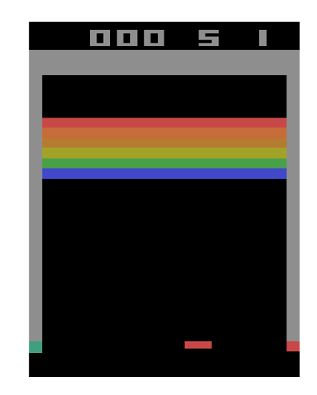
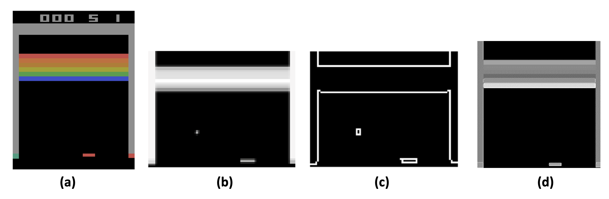
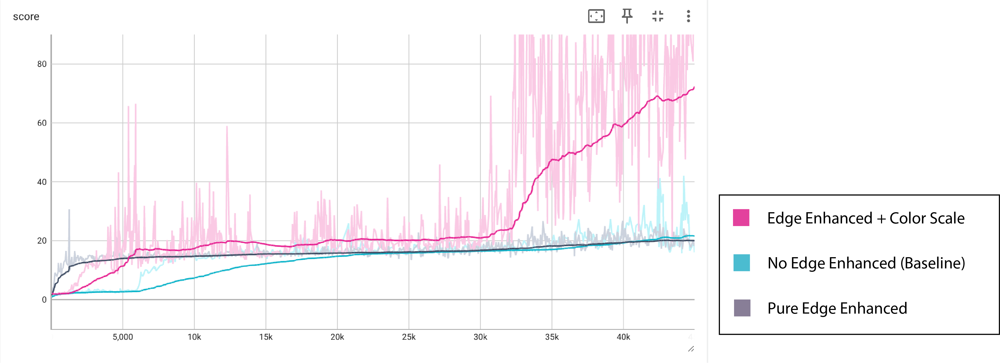

Bridging from images to actions : How computer vision techniques affect RL agent?
Georgia Tech CS6476 Project (Mar 2024) Eva Li, Juntao He, and Seungeun Rho
Project description

Figure 1. An in-game scene of Atari-Breakout
In this project, we aim to investigate how both classical and modern techniques in computer vision affects to the performance of
Reinforcement Learning (RL) agents in game domains. We trained an agent that decides an action based on an observation using RL.
We used Breakout-Atrai game as our benchmark environments, since Breakout presents a classic yet challenging scenario for RL agents due to its dynamic nature and complex gameplay mechanics.
For each step, the only information given to the agent is RGB image, so the agent should be able to infer the true state by encoding the low-level image input
into high-level embeddings, which later will be used to decide actions.
To demonstrate the effectiveness of computer vision techniques we learned from class, we apply following two different techniques for extracting the informations from image,
and see how the final performance changes.
1) Enhancing observation using Edge Detectors
By augmenting the raw visual data with edge information, we aim to provide the RL agent with more salient features to better understand the game dynamics.
Our primary goal is to evaluate whether incorporating edge detection preprocessing enhances the training performance of the RL agent, ultimately leading to
improved gameplay proficiency.
2) Ablation study of neural network architectures - CNN vs Vision Transformer
During the coursework we learned two most prominent neural network archiectures for image encoding; Convolutional Neural Networks(CNN) and Vision Transformer(ViT).
We aim to compare the effectiveness of each architecture for encoding image for RL agents.
Since the RL has seen remarkable advancements particularly in the domain of video game playing agents, we believe that understanding the usefulness of each computer vision
techniques for encoding images will lead to deeper understanding of each method.
Related Works
In this section, we cover representative works from the domain of image based deep RL.
The paper introduces the Proximal Policy Optimization (PPO) algorithm, a family of policy gradient methods for reinforcement learning.
To train and evaluate the performance for each of methods, we used this algorithm. This paper demonstrates the effectiveness of PPO algorithm in various
benchmark tasks, including simulated robotic locomotion and Atari game playing. Specifically, the paper compares PPO with other algorithms on the Atari domain,
showcasing its superior performance in terms of sample complexity. In the Breakout environment, PPO demonstrates significant improvements in learning
efficiency compared to other algorithms, highlighting its potential for achieving stable and reliable policy optimization in image-based reinforcement learning
tasks.
Dosovitskiy, Alexey, et al. "An image is worth 16x16 words: Transformers for image recognition at scale." arXiv preprint arXiv:2010.11929 (2020).
This paper presents the use of transformer for encoding images. Before this paper came out, transformer was mostly used for encoding sequential data.
This paper suggests that you can translate image into smaller patches and flatten in 1D to make it look like sequential data, and using transformer
on top of it gives us efficient embeddings of image.
D. Kalashnikov et al., "Scalable Deep Reinforcement Learning for Vision-Based Robotic Manipulation," in Proceedings of The 2nd Conference on Robot
Learning, vol. 87, pp. 651-673, PMLR, 2018
The QT-Opt algorithm presented in this paper is relevant to image-based reinforcement learning for environments like Atari Breakout.
Like Atari games, QT-Opt learns policies directly from raw pixel inputs using deep Q-learning.
The distributed off-policy training procedure enables learning from massive amounts of experience data, which could potentially be useful for increasing the sample efficiency
for gaming enviromnets such as Atari.
Additionally, the stochastic optimization used in QT-Opt to select actions could help with the high-dimensional and potentially multimodal action spaces present
in many Atari games.
D. Yarats, et al. "Reinforcement Learning with Prototypical Representations," in Proceedings of the 38th International Conference on Machine Learning,
vol. 139, pp. 11920-11931, PMLR, 2021.
Proto-RL is a novel self-supervised framework that learns visual representations and prototypes in a task-agnostic pre-training phase for image-based reinforcement learning.
During pre-training, it explores the environment to maximize state entropy while learning the representations/prototypes.
The learned representations and prototypes then accelerate downstream task learning by providing effective embeddings and enabling better exploration, leading to state-of-the-art performance on various challenging visual control tasks from the DeepMind Control Suite.
Huang, Yangru, et al. "Spectrum random masking for generalization in image-based reinforcement learning." Advances in Neural Information Processing
Systems 35 (2022): 20393-20406.
The paper discusses the challenge of generalization in image-based reinforcement learning (RL) and proposes a novel augmentation method called Spectrum Random Masking (SRM) to address this issue. SRM operates in the frequency domain and aims to enhance the diversity of training observations while maintaining the main content.
This method has been shown to improve model robustness under various distribution shifts and enhance learning stability, making it relevant to Atari games, especially Breakout environments, where the ability to generalize across different visual scenarios is crucial for effective RL performance.
The proposed SRM method's focus on frequency-based augmentation and its potential to improve generalization aligns with the challenges faced in training RL agents for Atari games, where visual inputs and distribution shifts are significant factors impacting performance.
Methods/Approach
Our objective is to train an RL agent using the Proximal Policy Optimization (PPO) algorithm, and see how the performance varies depending on differnet types of
Computer Vision(CV) techniques. We are planning to apply two types of techniques. The first techniques is classical; we are going to apply edge detector
for enhancing raw observation, and see whether it gives more avid signals when the scene is changed during the game. The second techniques is investigate
different neural network architecture. More specifically, we are going to test both CNN and ViT. However for this report, we only cover the first technique
and leave the second one for the final report.
1) Enhancing observation using Edge Detectors

Figure 2. Original Frame
A pivotal aspect of our methodology is the application of targeted image preprocessing techniques aimed at optimizing the visual information fed into
the model.To optimize the agent's ability to learn from visual inputs, we developed a preprocessing pipeline that includes the following
steps. First, the original input observations from the game is RGB image with size of 210 x 160 (Figure 1.a). We first preprocess this image and then applies
edge detectors on top of it. Figure 2 illustrates the examplary image from each procedure
(a) Original Frame
(b) After Preprocessing
resize into 84 x 84
transform into gray image
cut out the top 16 pixels and bottom 4 pixels which are irrelevant to game playing
stack 4 consecutive images : providing the agent with temporal context necessary for understanding motion and progression within the game.
(c) Edge Enhanced Frame After Preprocessing
(d) Edge Enhanced + Color Scale Frame After Preprocessing
2) Reinforcement Learning
We directly implemented RL algorihtm, Proximal Policy Optimization (PPO) by ourselves to avoid the overhead of more complex systems. This enhanced computational
efficiency and facilitates experimentation.
Convolutional Neural Network (CNN): Our model architecture includes a CNN tailored for extracting features from game frames. The network consists of three convolutional layers, each followed by ReLU activation and max pooling, culminating in a flattened layer for further processing.
Policy and Value Networks: Separate networks derive from the CNN's output, with the policy network predicting action probabilities and the value network estimating state values. This separation facilitates the efficient optimization of both policy and value predictions.
Our training process is governed by a carefully selected set of hyperparameters, optimized to balance learning efficiency and performance:
Learning Rate: 0.0001, controls the step size during optimization, ensuring steady convergence without overshooting.
Lambda (λ): 0.95, used in the Generalized Advantage Estimation (GAE), influencing the bias-variance trade-off in advantage computation.
Epsilon Clip (ε): 0.1, limits the ratio of new to old policy probabilities, preventing large policy updates that could destabilize training.
K Epochs: 3, the number of epochs for updating the policy using the same set of sampled data, ensuring thorough utilization of each batch.
T Horizon: 20, defines the length of the trajectory segment used for each update, balancing the trade-off between update frequency and the quality of the advantage estimates.
Custom Vector Environment
We also implemented designed algorithm in vectorized environment so that multiple instances of the environment can be run in parallel. This means that the agent can collect more diverse experience in a shorter amount of time, leading to faster learning and improved overall performance.
Experiments / Results
We conducted three distinct training experiments on the Breakout game, employing different image preprocessing strategies to evaluate their impact on learning performance (Figure 3).
Default Preprocessing (Blue): Our first experiment adhered to the default preprocessing settings provided by OpenAI's AtariPreprocessing, FrameStacking, and simple crop of top and bottom of the page that consist of useless information for agent training. This method provided a baseline for performance comparison, focusing on the original visual representation with minimal modifications. Shows a score ending near 40.
Edge Detection Only (Black): The second approach used edge detection exclusively to process the game images. This technique, while effective in highlighting structural information, resulted in suboptimal performance due to the absence of color data, which is essential for recognizing score-related changes in the game environment. Shows a score increase modestly to just above 20.
Edge Detection with Image Stacking (Pink): The most successful approach combined edge detection with image stacking, integrating both structural and temporal information into the AI's decision-making process with scores improving significantly to reach around 60. This method significantly outperformed the others, indicating that a composite representation of visual data, incorporating both immediate and historical game states, yields superior learning outcomes.

Fig 3. Score Change of Three Preprocessing Procedures Over 45k Training Iterations
What’s next
Implementation of ViT (~April 10th) : Juntao He, Eva Li
Experimentation with ViT (~April 17th): Seungeun Rho
Final Report (~April 20th): Seungeun Rho, Juntao He, Eva Li
Team member contributions
Eva Li : In charge of experimentations. Implemented Edge detector. Tested different types of methods and report results.
Seungeun Rho : In charge of implementations. Implemented backbone PPO codes, custom Vectorized environments, agent architectures, and training code.
Juntao He : In charge of project webpage and report. Related work research. Also helped implementing features from backbone codes.